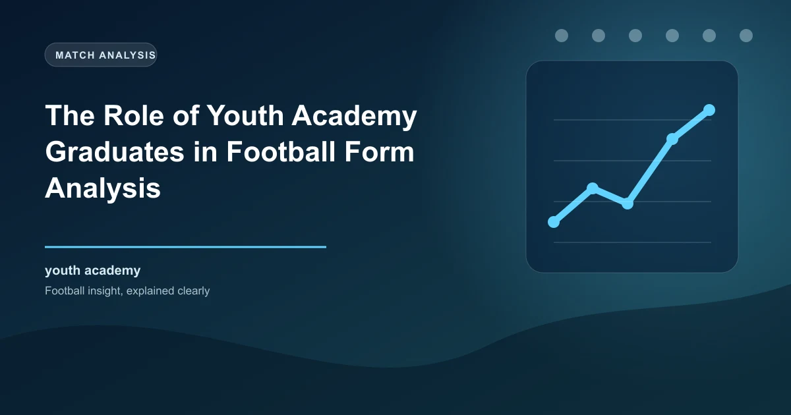

In modern football, a club's youth academy is far more than a development programme for future stars. It is a strategic asset that directly influences a team's form, consistency, and long-term competitiveness. Clubs with strong academies produce players who understand the club's system, culture, and playing philosophy from a young age, creating a depth of squad knowledge that expensive signings alone cannot replicate. For football bettors, understanding how academy output affects team performance provides a valuable edge in predicting which teams will sustain form and which will fade.
Youth academy graduates bring several unique advantages to a football team that directly affect on-pitch performance and, consequently, betting outcomes:
Research into team performance patterns across Europe's top leagues reveals a clear correlation between academy output and form consistency. Teams that regularly promote academy players to the first team tend to show less variance in their results over a season, maintaining a steadier points-per-game average compared to teams built primarily around expensive external signings.
Barcelona (La Masia): Barcelona's legendary La Masia academy has produced players like Lionel Messi, Xavi, Andres Iniesta, Pedri, Gavi, and Lamine Yamal. During periods when La Masia graduates form the core of the team, Barcelona's results are notably more consistent. The 2022-23 La Liga title, won with a core of academy graduates including Pedri, Gavi, and Balde, showcased this consistency with a remarkable defensive record and steady accumulation of points.
Ajax: Ajax's academy is arguably the most productive in world football relative to club size. The 2018-19 Champions League semi-final run was built around academy graduates like Frenkie de Jong, Matthijs de Ligt, and Donny van de Beek. Even in less celebrated seasons, Ajax maintains domestic consistency because their academy provides a constant stream of talented, system-ready players.
Athletic Bilbao: Athletic Bilbao's policy of fielding only Basque players, many of whom come through their academy, has made them one of the most consistently competitive clubs in La Liga despite never winning the title in the modern era. Their academy ensures they always have players who understand the club's identity and playing style.
Brighton & Hove Albion: Brighton have invested heavily in their academy and scouting network, producing graduates like Lewis Dunk, Solly March, and Ben White (before his sale). Their rise from League One to the Premier League and subsequent European qualification has been built on a model that integrates academy talent with strategic signings.
The statistical pattern is clear: clubs with strong academies maintain more predictable, consistent form. This consistency makes them more reliable betting propositions, particularly over the course of a full season. While they may not always produce the highest peaks, they avoid the dramatic valleys that characterise teams built around mercenary signings who may lack commitment or system understanding.
Youth academy graduates bring a unique combination of energy and inconsistency that creates specific betting dynamics. On one hand, young players are typically enthusiastic, physically fresh, and eager to prove themselves. This energy can be a significant advantage, particularly in the latter stages of matches when older, more experienced players may be tiring.
On the other hand, young players are inherently less consistent than experienced professionals. A 19-year-old academy graduate might produce a man-of-the-match performance one week and a subdued display the next. This inconsistency is not a flaw but a natural part of player development. Young players are still learning to manage the physical and mental demands of professional football, and their performances fluctuate accordingly.
Matches where academy graduates make up a significant portion of the starting lineup tend to feature higher intensity in the first 30 minutes. Young players press more aggressively, run more, and create a frenetic tempo that can overwhelm opponents who are not prepared for it. This energy advantage is particularly pronounced in home matches where the academy graduates are playing in familiar surroundings and feeding off the crowd's support. Consider backing the home team to score first or to be leading at half-time when a strong academy contingent is in the starting XI.
One of the most interesting patterns in football is the "breakout season," where an academy graduate suddenly performs above their perceived market value. This phenomenon creates significant betting opportunities because bookmakers and the market often fail to adjust quickly enough to a young player's rapid improvement.
A breakout season typically occurs when an academy player is given an extended run in the first team, usually due to an injury to a senior player or a change in management. Once the player establishes themselves, their output often exceeds expectations because they combine the system knowledge of an academy product with newly developed physical and technical abilities.
Notable breakout seasons include Marcus Rashford at Manchester United in 2015-16, when the academy graduate scored eight goals in 18 appearances after being thrust into the team by Louis van Gaal. More recently, Jude Bellingham's first season at Real Madrid in 2023-24 saw the young midfielder score 23 goals in all competitions, far exceeding pre-season expectations. Lamine Yamal at Barcelona in 2023-24 became the youngest player to score in a European Championship final at 16 years old, having been integrated into the first team earlier that season. Each of these breakout performances coincided with improved team results, as the new contributor elevated the overall squad performance.
From a betting perspective, identifying potential breakout candidates before the market adjusts is highly valuable. Monitor pre-season reports, youth team performances, and managerial comments about young players. When a manager publicly commits to giving an academy player first-team minutes, this is often a signal that the player has the quality to make an immediate impact.
Squad depth is one of the most critical factors in sustained football performance, and academy output directly affects it. Teams with strong academies have a built-in advantage in squad depth because they can promote talented young players to fill gaps caused by injuries, suspensions, or fixture congestion without spending transfer fees.
This depth advantage becomes particularly important in the second half of the season, when fixture congestion peaks and injuries accumulate. Teams relying solely on external signings may find themselves short of options when key players are unavailable, leading to a drop in performance. Teams with strong academies can call on capable young replacements who understand the system and are physically ready to contribute.
Track the number of academy graduates in each team's first-team squad and the minutes they are playing. Teams with 5+ academy graduates regularly featuring in the first team have a measurably more consistent points-per-game record over a season. This data is readily available on club websites and Transfermarkt. Use this information to identify teams that are likely to maintain form through fixture congestion and injury crises.
Here are practical strategies for incorporating academy analysis into your betting approach:
Cup competitions often feature heavily rotated squads as managers rest key players for league commitments. Teams with strong academies can rotate effectively while maintaining quality, giving them an advantage in knockout ties. Look for teams with deep academy talent pools in early rounds of domestic cups when they face opponents who may struggle to rotate.
Teams built around expensive but aging signings often experience form collapse when those players decline or become unavailable. Without academy graduates ready to step up, these teams lack the depth to maintain performance. Identify teams with aging squads and thin academies as candidates for declining form in the second half of the season.
When a club promotes several academy graduates to the first team simultaneously, there is typically a short adjustment period followed by improved form. The initial uncertainty of youth integration gives way to a more dynamic, energetic team as the young players gain confidence. Bet on these teams to improve as the season progresses rather than judging them on early-season results.
While academy graduates bring many benefits, they also carry risks. Young players are more prone to inconsistency, injury, and mental pressure. A team relying too heavily on youth may lack the experience needed in high-pressure situations, particularly in relegation battles or title races. Always balance your academy analysis with a team's overall experience levels and the specific demands of each fixture.
Understanding the timeline of academy investment and return is crucial for long-term betting strategies. A club's academy investment typically takes 5-8 years to produce first-team ready players. When a club announces a major academy investment or hires a new head of youth development, the impact on first-team performance is unlikely to be felt for several years. Conversely, clubs that have cut academy funding may see their squad depth and consistency decline over a similar period.
Monitor club announcements about academy investments, coaching changes at youth level, and partnership agreements with local football clubs. These signals can help you predict which clubs are building sustainable competitive advantages and which are eroding them. The betting implications of these long-term trends are significant, particularly in outright markets for league titles, European qualification, and relegation.
WinFulltime incorporates squad composition and academy data into its prediction models for smarter betting.
Get Today's PredictionsGet live predictions and in-play tips for matches happening right now.
View In-Play Tips Win
Win